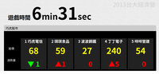

2013 | 全國高中生政策創意競賽網站
- 為社科院學生會舉辦的活動設計版型與架設網站
- 使用HTML/ CSS，嵌入jQuery Plugin
- 微量PHP語法調控頁面顯示
- 網頁視覺圖片有專人設計
- 可優化之處：
- 改成動態式網頁，可線上報名、線上留言、具管理後台等等
- 加入響應式設計
- 使用AngularJS規劃前端設計

2013 | 台大經濟營市場遊戲 - 股票顯示介面
- 使用HTML/ CSS/ Java Script
- 可優化之處：
- 設計股價漲跌演算法，優化股價數據，取代給定數字的作法
- 或撰寫網路爬蟲，讀取真實股市數據
- 將數據存入資料庫